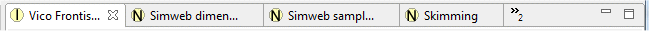

|
|
Eclipse and Pliny use the limited amount of screen space available on a modern computer display by dividing the available screen area into panes, and then layering different screen materials into them. Recall the sample Pliny screen shown above:
As already mentioned in the section Eclipse UI Basics, we see in this example two panes -- a small one to the left of the screen, and a larger area to the right. As the basics section says, the boundary between panes is moveable so that one can change the proportion of the screeen given to each part. Furthermore, later in this section we will describe how one can move a pane from the left side of the screen to the right, or to the bottom, etc. For now, note that this pane layout provides a basic navigational display (called the Resource Explorer View in Pliny) in the small left pane, and reserves the larger pane to the right for resources of various kinds that Pliny manages for you.
Each pane can contain more than one display object. If it does the separate displays are usually stacked one on top of the other, so that only the top one is visible on the screen at a time. Which displays are open in a pane can be seen by the tabs that identifies them. The tabs show at the top of the pane, and in the main pane area in the figure above look like this.
From the tabs display we can see that this pane currently displays three open displays:
One displays with a white background -- it is the tab for the currently visible resource. The other two with gray backgrounds identify other resources that are also open in this pane but are not currently visible. To make one of them visible simply click in the appropriate tab.
Tabs take up horizontal space, of course. What happens when there are more open resources in a pane than the pane's width can properly accomodate? You can see what Eclipse/Pliny does to the tabs from this example:

Here 6 items are open in the main pane. For the first four, Eclipse is showing you the names of each resource in the four tabs (although you can see that it has abbreviated the name of the second one -- if you place the pointer over this name Eclipse will show you the full name as a tooltip). The double chevron symbol following the 4th tab () show you that there are two more resources open here, but no room to show them in the list of tabs.
Clicking on the double chevron object near the right end of the tab bar causes Eclipse to show you the open items in this pane as a list:
The list contains one item for each open display. The names in bold are the resources which do not have tabs at present, the names in non-bold font simply duplicate the tab list. To bring one of these items into view simply choose the item from the list and click on it.
As you open more items in Pliny they accumulate in the editing pane. To remove an item from the editing pane you must close it. You can do this by clicking in the X icon that appears at the right end of its tab. Furthermore, if you point at the tab area on the screen and click with the right mouse-button you will be presented with a set of closing options:
Note that items continue to accumulate as you open them. If you make no effort to close items shown in the tab area you could perhaps get hundreds of open items, and this can become unmanageable for you and will slow Pliny down. Therefore, remember to clean up the tab area by closing all the currently open items from time to time.
When you start Pliny for the first time you will see that Pliny lays out a narrow navigation pane to the left containing the Resource Explorer view, and a wider main working pane (Eclipse's editor pane) to the right. You can rearrange content in the panes in a number of ways:
There are many situations in Pliny where the screen is divided into separate components -- Pliny's panes are one example. In Pliny some panes are further subdivided into areas. In almost all cases the border between any two of these pieces can be moved by you. To do so place the mouse pointer in the strip that separates the two panes. The mouse pointer should change to "" if the border area is vertical, and to an up-down pointing arrow if the border is horizontal. You can now, by holding down the main mouse button, drag the boundary to the right or the left (or up/down if the border is horizontal).
A pane can be divided into two or more parts so that more than one object can be seen at the same time. In Eclipse-speak this process is called docking. Suppose, for example, that you wish to divide the editor pane in two vertical pieces so that you can see two resources and their associated note references or annotations at the same time. To do this, place the mouse pointer in the tab of any of the open items and push the mouse button, dragging down towards the bottom of the pane area. White virtual dividing lines will appear to show where the dividing point is going to be, and the screen pointer might change to the icon . To indicate that you wish to split the screen top-bottom, drag the pointer near to the bottom of the pane area. It might then change to the icon to indicate that the newly created area will dock there. At the same time an grey line will appear across the pane showing where the boundary will be placed between the top and bottom parts. To complete the docking, release the mouse button. The screen will change to:

Focus on the editing pane -- the main working area to the right. Here you can now see that the editing pane has been split in two pieces vertically, and the selected item (Vico Frontispiece) has been moved to the bottom half. The top area shows one of the other items that remain there. Eclipse/Pliny will normally split the area more or less in half, but you can change the proportion by dragging the boundary between the areas up or down.
Once you have two or more docking areas in the pane you can move objects between them by pointing at the tab of the object you want to move and dragging the tab to the tab area in the new area where you want it to appear. If the last item is dragged out of an area (such as what would happen if we currently dragged Vico Frontispiece back up to the top area, or if we closed the Frontispiece view), the empty area will disappear and in this case (because it was created below the original area) the original area that is currently showing above it will expand to take over the vacated space.
You can move any of the view panes (containing things like the Resource Explorer) out of the main Pliny window altogether. To do so, point at the tab of the object you wish to drag out and drag it out of Pliny's main window. The object will then be displayed in a separate window, and the other panes in Pliny's main window will expand to take up the space that has been freed. Unfortunately, this cannot be done with the editor pane.
To put a pane back into the main Pliny window drag the tab in the separate pane window (not the window border!) back to the main Pliny window and release.
In the top right corner of all panes are the minimize
( ) and maximize (
) and maximize ( ) buttons.
) buttons.
 |
| Pliny Help Pages by John Bradley are licensed under a Creative Commons Attribution-Noncommercial-Share Alike 2.0 UK: England & Wales License. |